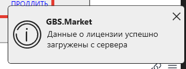
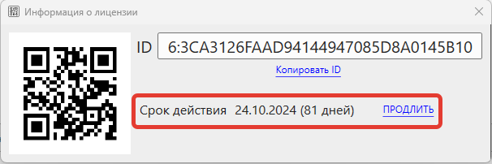
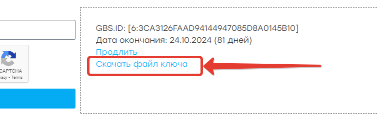
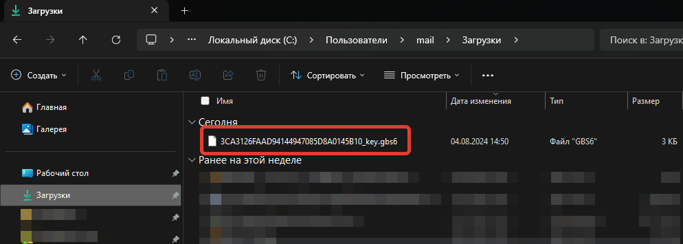
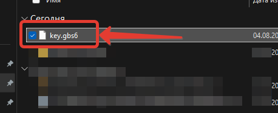
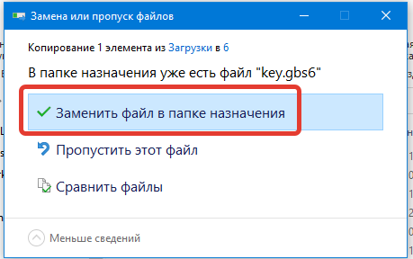
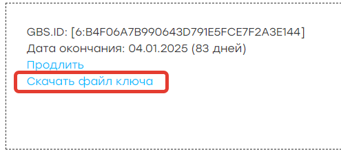
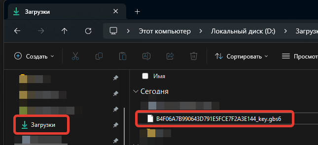
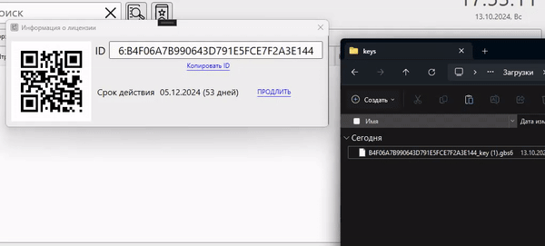

Для активации оплаченной лицензии следуйте инструкциям ниже.
Автоматическая активация
Важно
Убедитесь, что используете актуальную версию программы, так как старые версии могут не загружать ключ автоматически из-за изменения серверной инфраструктуры.
Активация без перезапуска
На главной форме программы в меню перейдите в Справка - Информация о лицензии и нажмите клавишу F5 для обновления ключа лицензии с сервера. Убедитесь, что при этом компьютер с программой подключен к интернету.
Программа уведомит об успешном обновлении данных о лицензии.

Активация с перезапуском программы
GBS.Market имеет встроенный механизм автоматической загрузки ключа лицензии. Для того чтобы загрузка произошла, необходимо перезапустить программу при активном подключении к интернету.
После перезапуска можно проверить срок действия лицензии в Справка - Информация о лицензии.

Активация вручную (копирование файла)
Если по какой-то причине автоматическая активация не происходит, вы можете активировать программу вручную с помощью файла.
Скачайте файл ключа
Чтобы скачать файл ключа для вашего GBS.ID, откройте страницу https://gbsmarket.ru/check-key/. В форме укажите GBS.ID и нажмите "Проверить". После этого отобразится информация о лицензии и ссылка для скачивания файла.

Файл будет сохранен в папку "Загрузки" на вашем компьютере.

Переименуйте файл
Переименуйте скачанный файл в key.gbs6 или key.id.

Скопируйте файл в папку с данными
По инструкции найдите папку с данными и скопируйте файл key.gbs6 (или key.id) в нее, подтвердив замену старого файла.
Важно
Обратите внимание, что файл ключа необходимо копировать в папку с данными, а не в папку с программой. Это разные папки.

Проверьте срок действия лицензии
Если все сделано верно, перезапустите программу и проверьте срок действия лицензии в Справка - Информация о лицензии.

Активация вручную (drag'n'drop)
Информация
Доступно начиная с версии 6.6.
Скачайте файл ключа
Чтобы скачать файл ключа для вашего GBS.ID, откройте страницу https://gbsmarket.ru/check-key/. В форме укажите GBS.ID и нажмите "Проверить". После этого отобразится информация о лицензии и ссылка для скачивания файла.

Нажмите Скачать файл ключа, чтобы скачать. Файл будет сохранен в папку "Загрузки" на вашем компьютере.

Перетащите файл в окно "Информация о лицензии"
Из меню главной формы программы откройте Справка - Информация о лицензии. Перетащите скачанный файл в окно "Информация о лицензии".

Срок действия лицензии будет обновлен из скачанного файла.